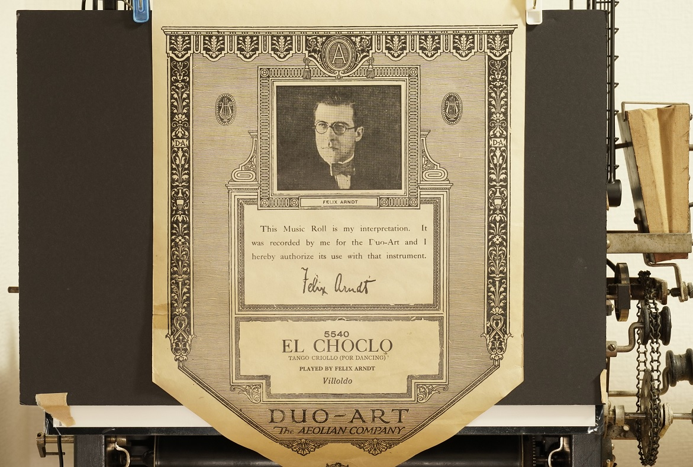
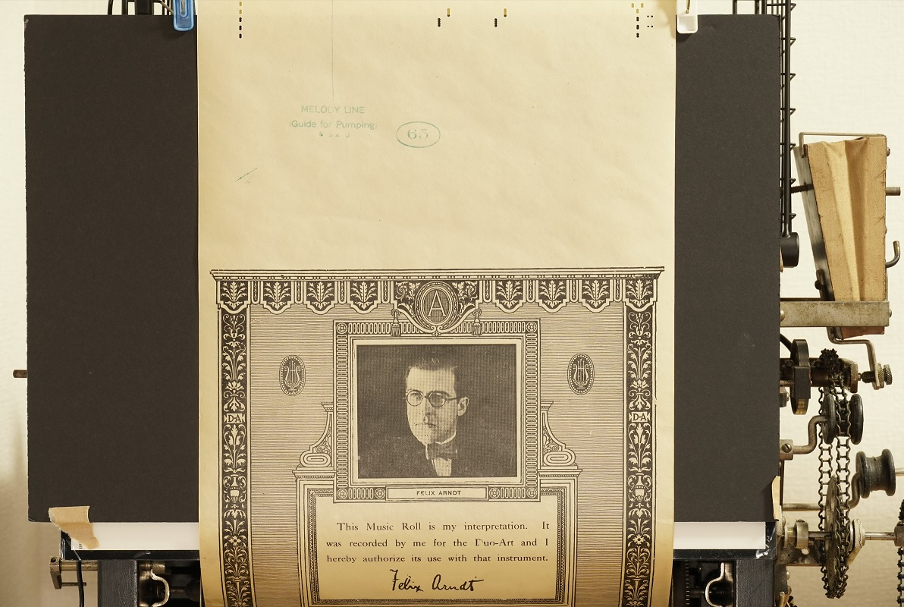
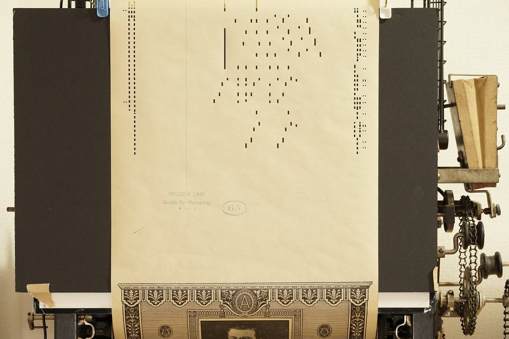
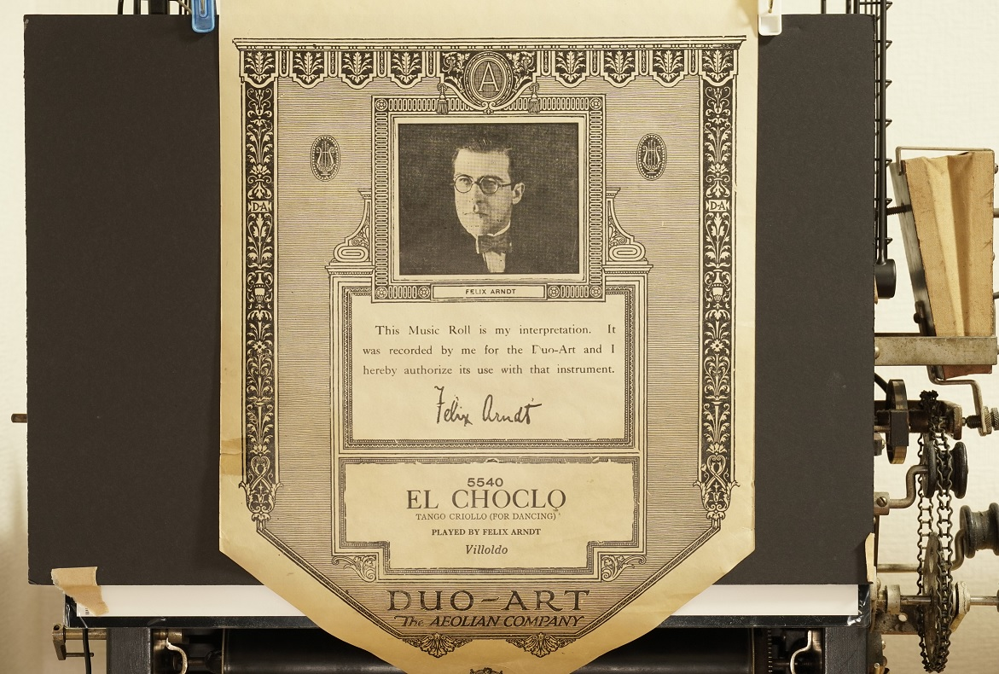
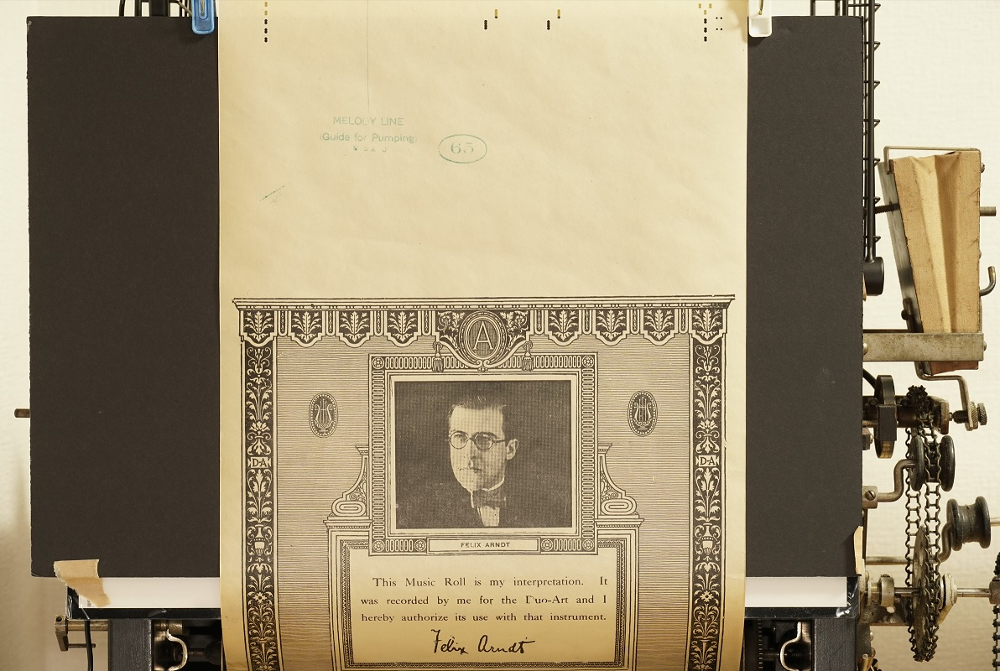
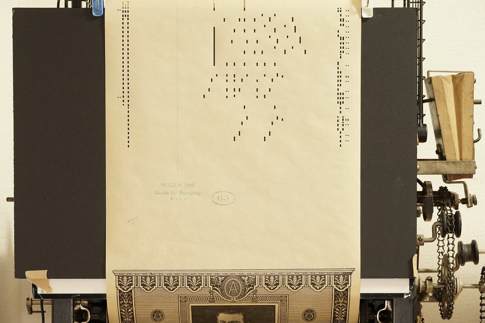

Profile
Sasaki Katsumasa / Katz Sasaki / @nai-kon
- Tokyo, Japan
- ML engineer / Software developer
- Works at Tax-Accounting system vendor in Japan
- Interesting in digitalize historic player piano rolls
Certification
- 基本情報技術者
- 応用情報技術者
- JDLA G検定
- TOEIC L&R 770点 (Listening 375/Reading 395、2013年11月 公開テスト)
- 普通自動車第一種免許 (MT)
Private Works
PlaySK Piano Roll Reader / ピアノロールのエミュレーションソフト


約100年前の自動演奏ピアノのピアノロール画像を読み取り、ノートやペダル、強弱をリアルタイムにエミュレーションしてMIDIを出力する世界的に珍しいソフトです。
MIDIを音源ソフトやヤマハの自動演奏ピアノに出力すれば100年前の演奏を現代に蘇らせることが出来ます。
2014年の初版以降改良を重ね、現在ではアメリカを始めとする英語圏のユーザーから指示を得ており、ユーザーの要望に応じた機能追加を随時行っています。
Python製でGUIにwxpyhonを使っています。画素計算やファイルのデコード処理はnumpyやCythonで高速化しています。また、GitHub Actionsでユニットテストやリリースバイナリの作成・署名のCI/CDを構築して自動化しています。
特徴
- ピアノロール画像をリアルタイムに読み取り、演奏をエミュレート
- 自動演奏ピアノの3大ブランドAmpico, Duo-Art, Welteを始めとする多様なフォーマットに対応
- エミュレートした強弱(空気圧)をグラフで表示
- 入力画像は標準的な.jpgや.png等に加え、ロールスキャン専用の.CISに対応
- Windows / MacOSに対応
ダウンロード
ユーザーの声
"This is absolutely wonderful!" (アメリカ アトランタ州)
"Your software is so useful and enjoyable." (ニュージーランド)
"Your 3.0 emulator is perfect, all the changes in the dynamics are appropriate and as to the truth." (イタリア)
"The emulated Disklavier performance here sounds essentially identical to the pneumatic performance on a well-restored Ampico, to my ear." (アメリカ ユタ州)
"It has been a dream to finally be able to hear what Recordo and ArtEcho rolls sound like and you made my dream a reality." (アメリカ カリフォルニア州)
"I am enjoying experimenting with your software. It's great to be able to see the roll!" (イギリス)
演奏動画
手書き数字認識デモアプリ

昔、機械学習の勉強で作成したシンプルな手書き数字認識のWebアプリです。ネットワークは2層のCNNと全結合層で、MNISTの手書き画像を学習しています。
バックエンドはPython/Flask/pytorch、フロントエンドはHTML5/JavaScript/TailwindCSSで構成。
以前は自宅SVにホストしていましたが、現在はGoogle App Engineにホストしています。
ChatGPT風のアプリ

OpenAI社のGPT-4のAPIを呼ぶChatGPT風のWebアプリです。これまで月額3000円でChatGPT Plusを契約していましたがAPIを呼んだ方が安上がりのため自作しました。
Vite+React+TailwindCSSで構成しています。チャット履歴はブラウザのローカルストレージに保存し、Windowsのスタートアップスクリプトでnpm run devする簡易仕様です。
Twitterの画像をAIで選別して表示するアプリ
マルチモーダルAI(BLIP-2)を用いてTwitterのタイムライン画像や検索画像を分類して、欲しい画像だけをフィルタして表示するアプリです。
Seleniumでブラウザからタイムライン画像をスクレイピングし、画像に写っている物体をVQAで一問一答してフィルタリングし一覧表示します。
ImageNetで学習したResNetでの画像分類も考えられますが、ImageNetの分類ラベルに欲しい分類が無い & BLIP-2だと物体の状態(例:"座っている犬" or "走っている犬")まで解るためVQAを使用しています。
バックエンドはPython/Flask/pytorch、フロントエンドはHTML5/JavaScript/TailwindCSSで構成しています。
ピアノロールのスキャン装置

一般的なピアノロールの読取装置はロールを巻き取りながら一次元のラインスキャンセンサーで連続的に撮影するため専用ハードが必要です。
この装置は市販カメラを用いて、ピアノロールの撮影と紙送りを自動で繰り返し、撮影した数百枚の画像をソフトウェアで自動で繋ぎ合わせます。
紙送りはebayで落札した実物の自動演奏ピアノの巻き取り装置をArduinoで制御したステッピングモーターで駆動し、撮影は一眼カメラ付属のソフト(Imaging Edge)をpywinautoで自動操作しています。
位置合わせでは画像同士のオーバーラップ部分で画素の差分が最小となる座標を算出して繋ぎ合わせています。
性質上、繋ぎ合わせの部分に僅かなズレが生じますが、PlaySK Piano Roll Readerでエミュレートする分には問題ありません。
・繋ぎ合わせ結果 (Duo-Art 5540 El Choclo)
 





{kind=link}
{kind=link}
{kind=link}

・PlaySK Piano Roll Readerでの演奏例 (Duo-Art 5877 Chopin Piano Sonata No.3 4th mvt)